Minecraft 26.60 — эталоны интерфейса
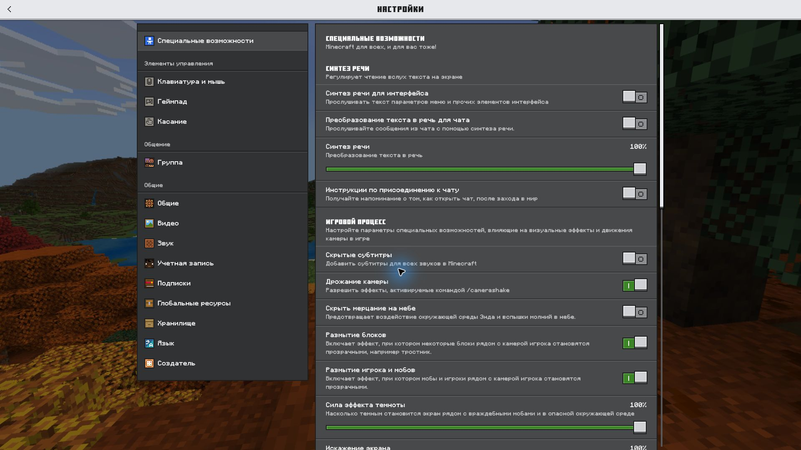
Переключатели и строки настроек
Открыть оригинал 1920 × 1080 ↗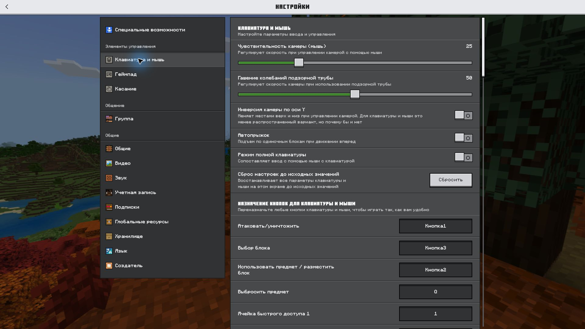
Ползунки и кнопки
Открыть оригинал 1920 × 1080 ↗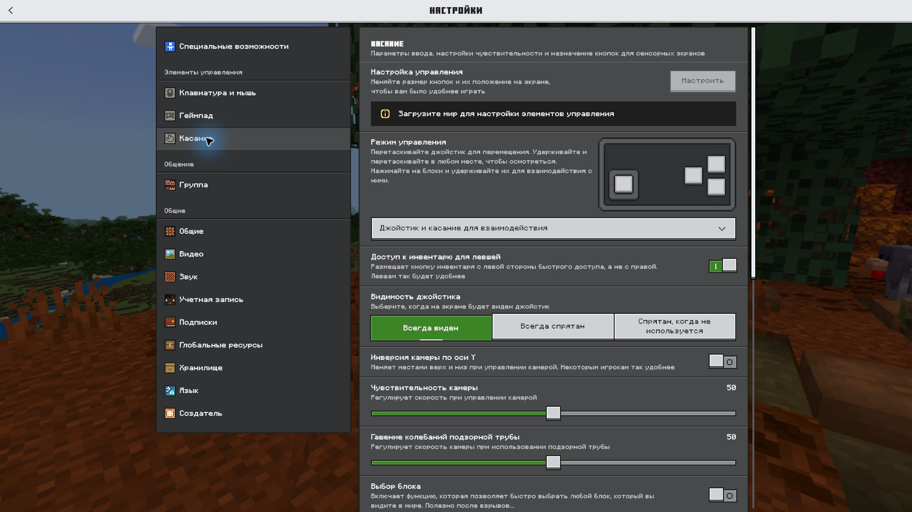
Выбор вариантов и disabled
Открыть оригинал 1920 × 1080 ↗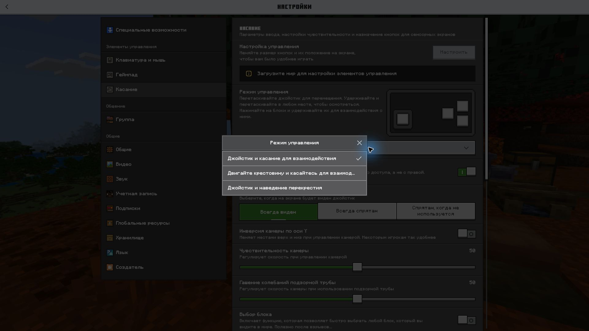
Модальное окно выбора
Открыть оригинал 1920 × 1080 ↗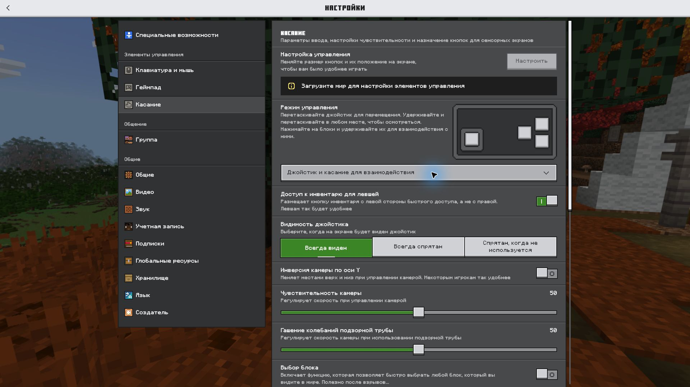
Select под курсором
Открыть оригинал 1920 × 1080 ↗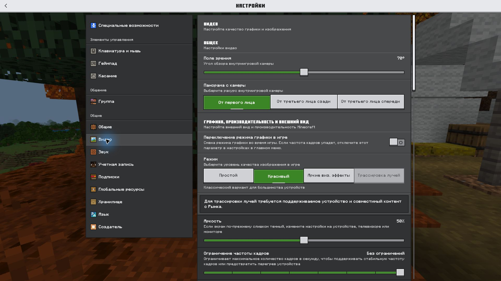
Сегменты и ступенчатый ползунок
Открыть оригинал 1920 × 1080 ↗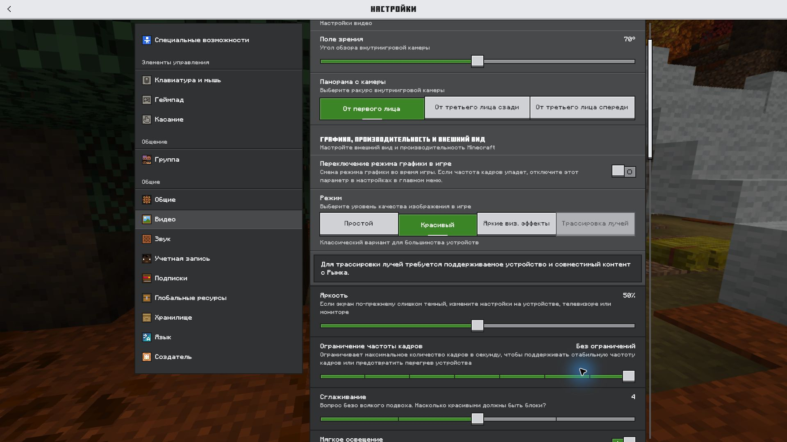
Деления и прокрутка
Открыть оригинал 1920 × 1080 ↗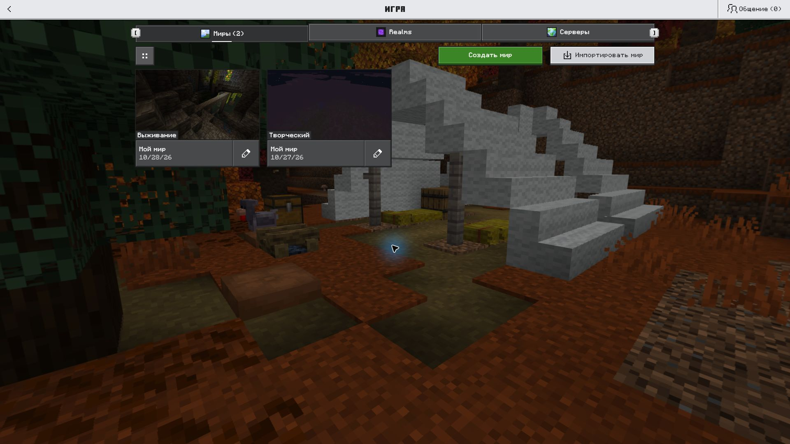
Вкладки и карточки миров
Открыть оригинал 1920 × 1080 ↗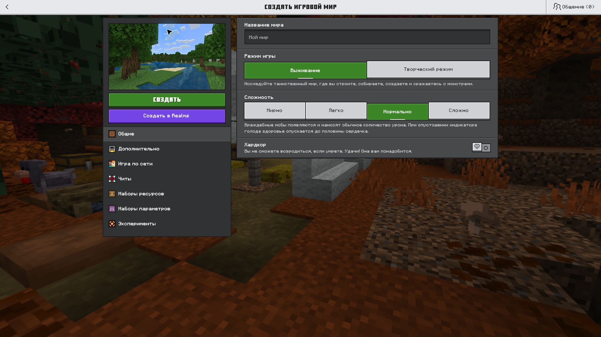
Кнопки и поля формы
Открыть оригинал 1920 × 1080 ↗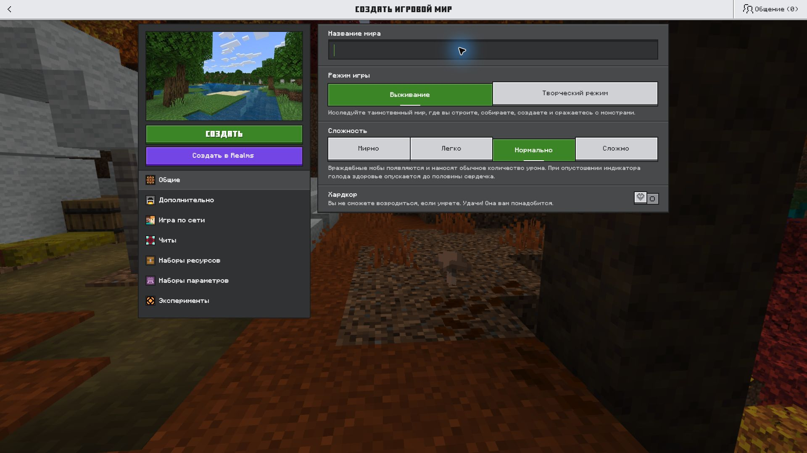
Фокус поля ввода
Открыть оригинал 1920 × 1080 ↗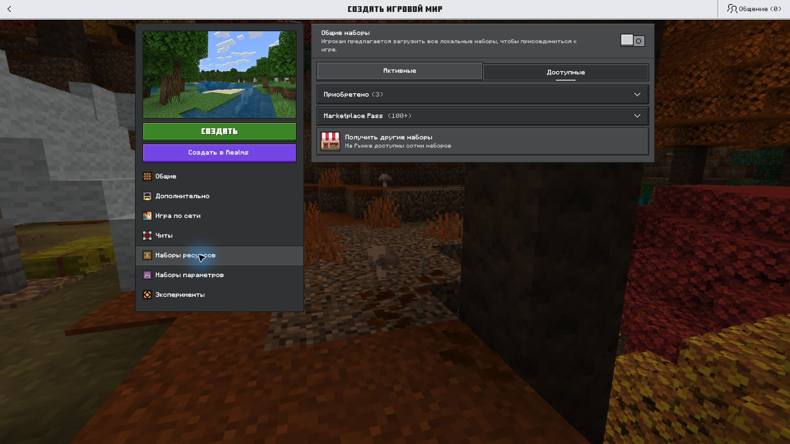
Закрытые секции
Открыть оригинал 1920 × 1080 ↗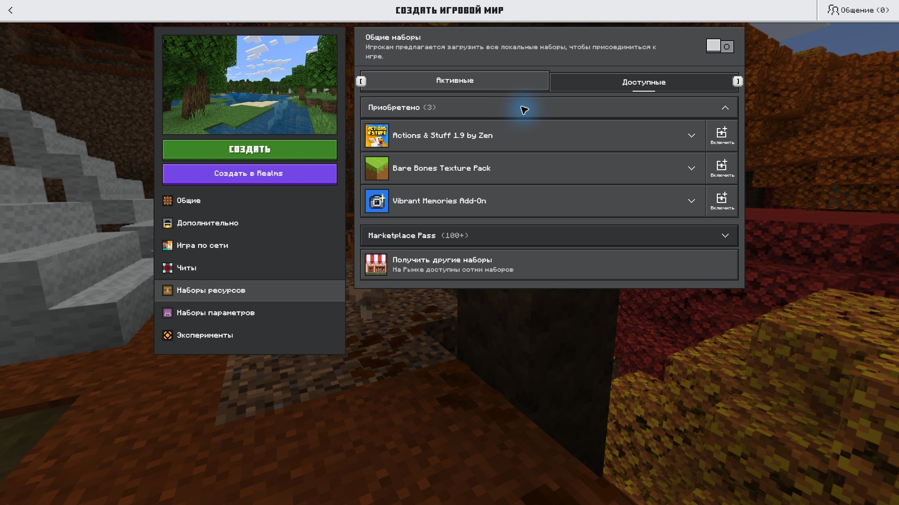
Раскрытая секция и строки списка
Открыть оригинал 1920 × 1080 ↗